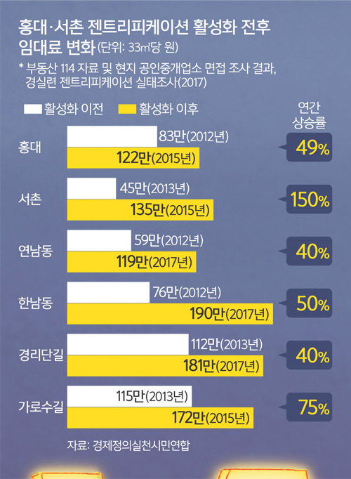

옛 정취가 사라진 서촌 많은 사람들에게 알려진 일명 ‘뜨는 동네’들은 거대 자본의 유입으로 거주민이 쫓겨나고 독특한 매력을 잃고 있다. 서울 종로 체부동과 누하동, 통인동 등 한옥이 즐비하게 들어선 지역, 경복궁 서쪽마을 ‘서촌’도 마찬가지다. 서촌은 인왕산과 경복궁 사이 한옥이 밀집한 지역으로, 조선시대 도심부 내 도시조직의 원형이 가장 잘 보존돼 있는 마을이다. 당초 서촌은 2000년 초반부터 옥인, 체부, 누하, 필운지역을 중심으로 재개발사업이 추진됐다. 하지만 건물주와 세입자 등 이해주체 간 갈등으로 진행되지 못했다. 2008년 서울시가 한옥선언을 한 이후 한옥을 활용한 용도변경 등 다양한 변화가 곳곳에서 일어났다. 2010년부터는 전통시장 시설현대화 등 지역활성화 및 관광자원화를 위한 공공 사업이 추진됐다. 그 결과 서촌은 역사를 간직한 고즈넉한 골목길과 한옥 등 다양한 건물들이 만들어내는 독특한 매력을 지닌 곳으로 성장했다. 하지만 이런 변화는 토박이들에게는 반가운 현상이 아니었다. 카페·음식점 등 자본이 밀려들고 관광지로 바뀌면서 젠트리피케이션(둥지내몰림)이 일어났다.
